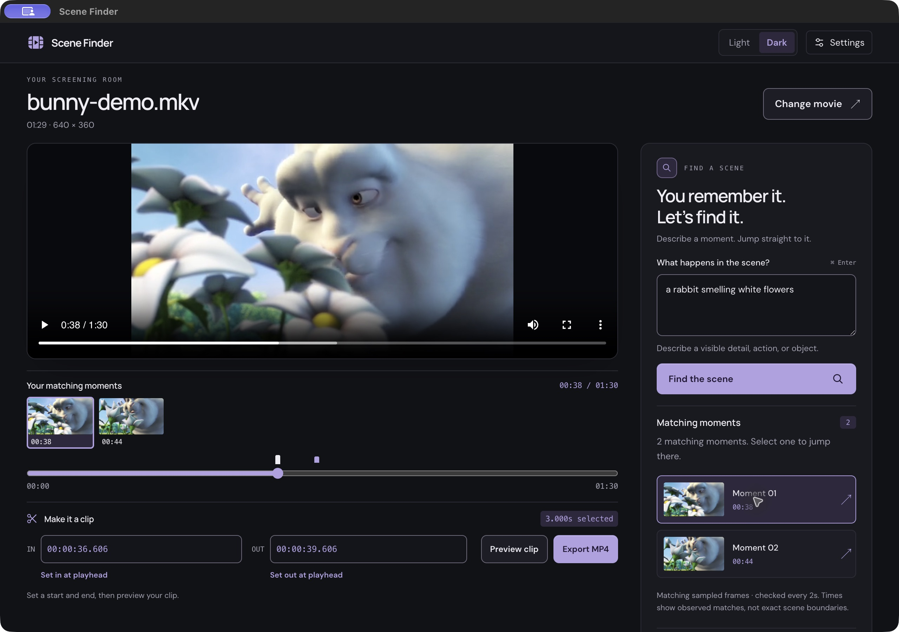
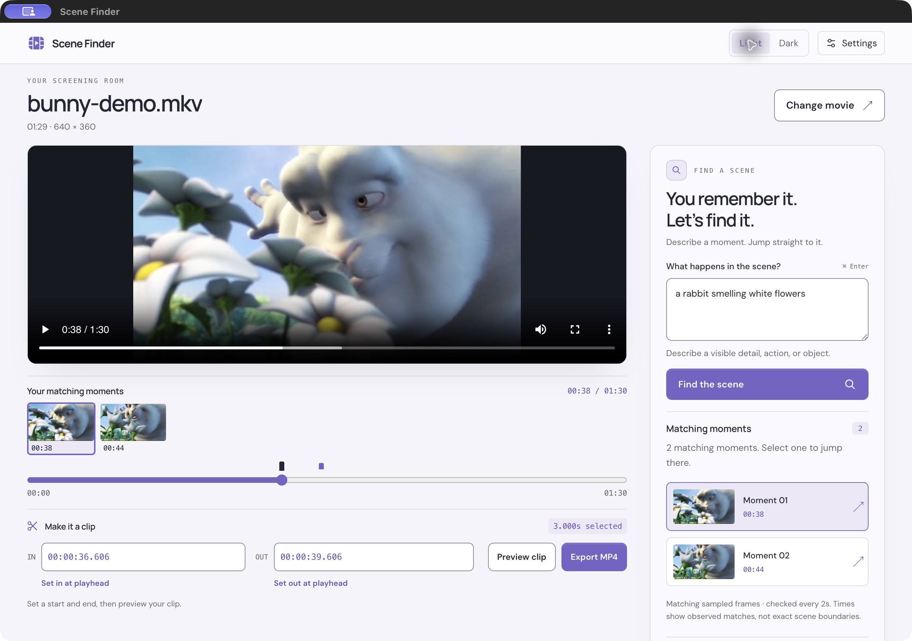

For Mac
Apple silicon · macOS 13+
Download for Mac DMG installer · Intel Macs not supportedA little closer to the scene in your head
Describe what happens in your movie.
Jump to the scene. Make it a clip.
For Mac & WindowsBring your own Jev key
LESS SCRUBBING. MORE FINDING.
The gesture. The expression. The rabbit with the flowers. Start with what you remember.
Connect your Jev key in Settings, then open an MP4 or MKV from your computer.
Describe a visible detail or action. Choose a matching frame to jump straight there.
Mark your in and out points, preview your selection, and save an MP4 clip.
YOUR OWN SCREENING ROOM
Find a reaction. Pull an editing reference.
Study a shot you can’t stop thinking about.
Keep everything in one quiet workspace.


Your full movie stays with you. Search sends sampled frames and your description to Jev. Your movie and exported clips stay on your computer.
THE NEXT SCENE IS YOURS
Download the desktop app, connect your own Jev key,
and start with a movie you love.
Apple silicon · macOS 13+
Download for Mac DMG installer · Intel Macs not supportedWindows 10 or 11 · x64
Download for Windows EXE installer · No admin account neededYou’ll need your own Jev API key. Connect it in the app’s Settings. Search needs internet access; Jev usage is billed through your own provider account. No key or search credits are included. About Jev ↗
BEFORE THE OPENING SCENE
Visible subjects, objects, actions, and details in your movie. For example, “a rabbit smelling white flowers.” This version searches sampled video frames; it doesn’t search dialogue or audio. Matches are approximate and may miss brief moments.
MP4 and MKV are supported. Incompatible video is prepared for playback on your computer. Direct file opening supports movies larger than 2 GB. Search checks up to 4,000 sampled frames—about 133 minutes at the default two-second interval. Use movies you have permission to work with.
Your full movie stays on your computer. During search, sampled frames and your query are sent to Jev using your API key. Clips are exported locally. When secure OS storage is available, your key is saved encrypted; otherwise the app tells you it can only use the key for the current session.
On Mac, open the DMG and drag Scene Finder into Applications. On Windows, run the setup EXE. For updates, quit the app and install the new release. There are no automatic updates yet. Uninstalling preserves your imported movies and settings.
Open an issue on GitHub with your operating system and what happened. Keep your API key and private movie frames out of reports.